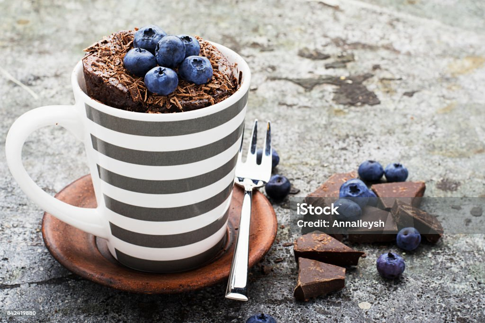
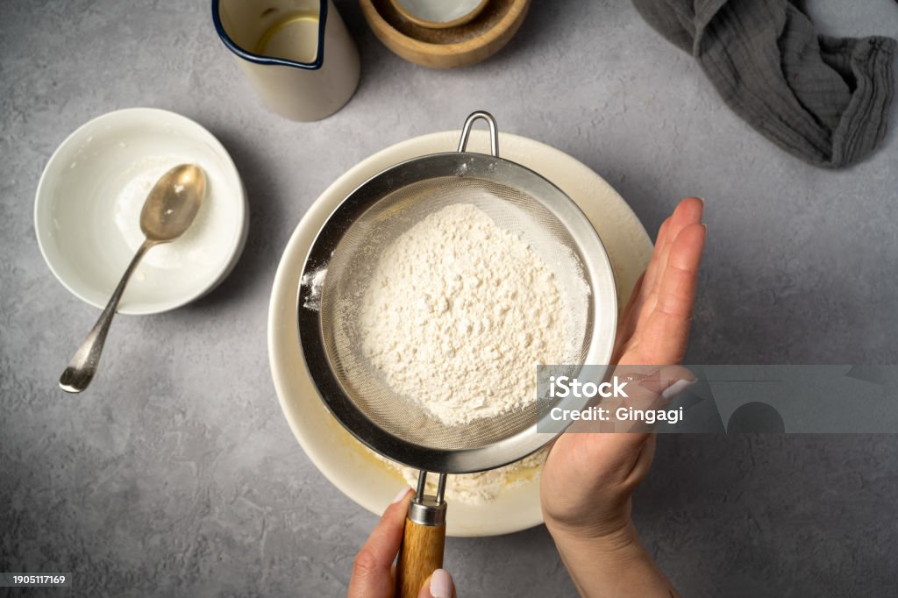
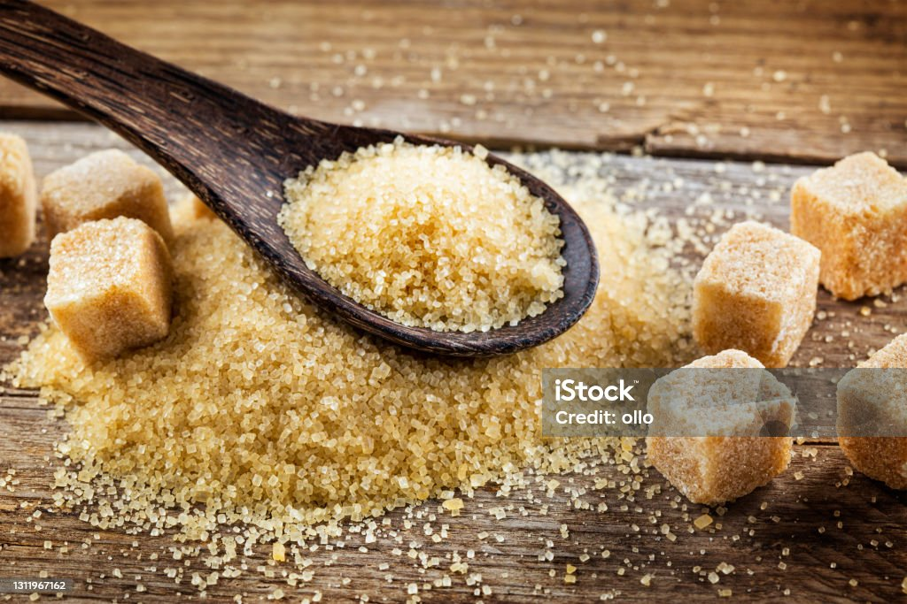
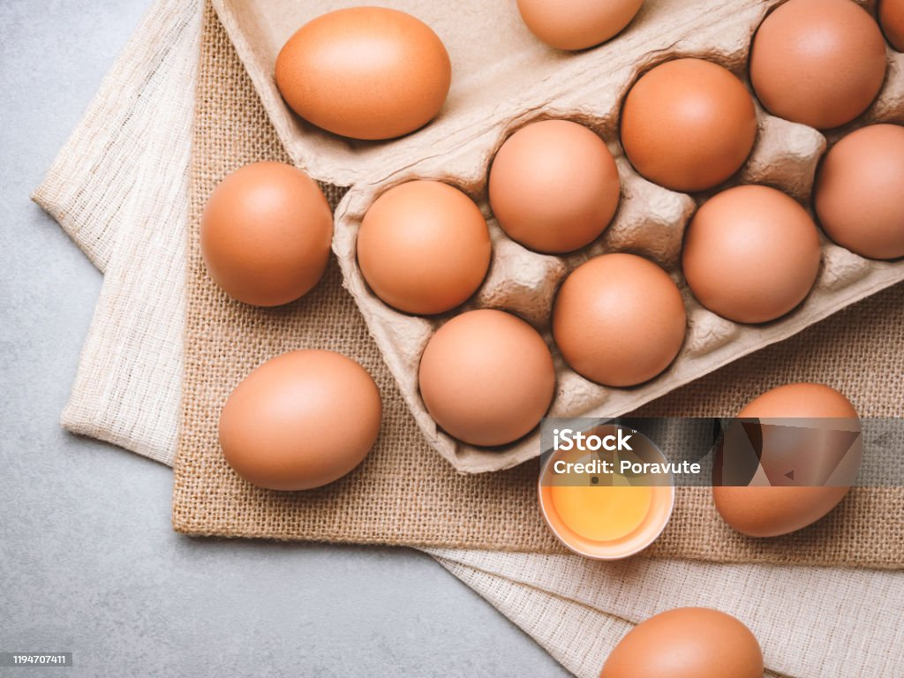
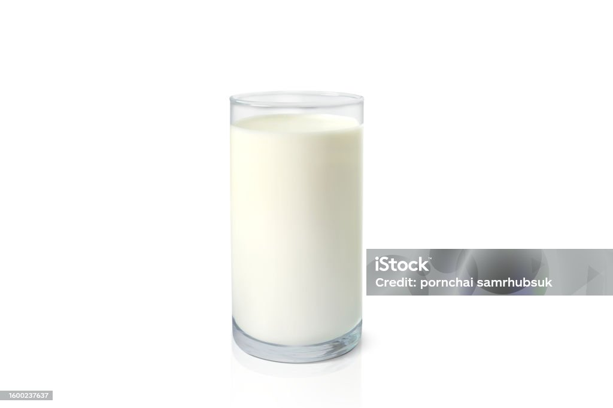
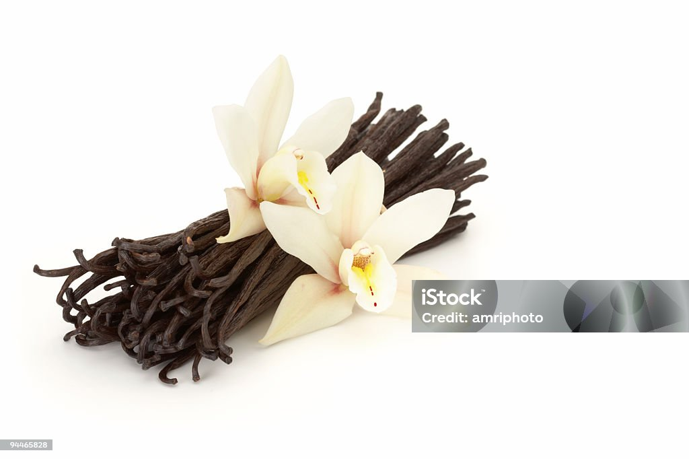
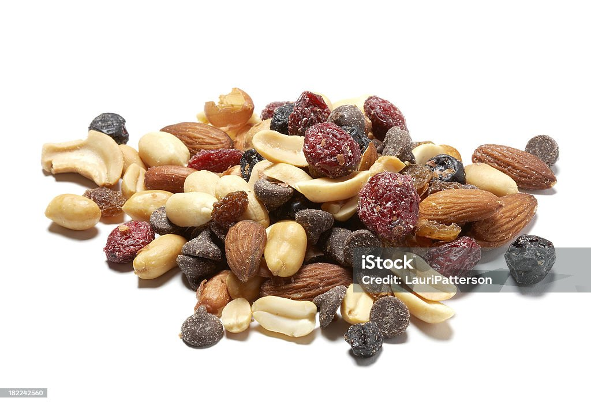
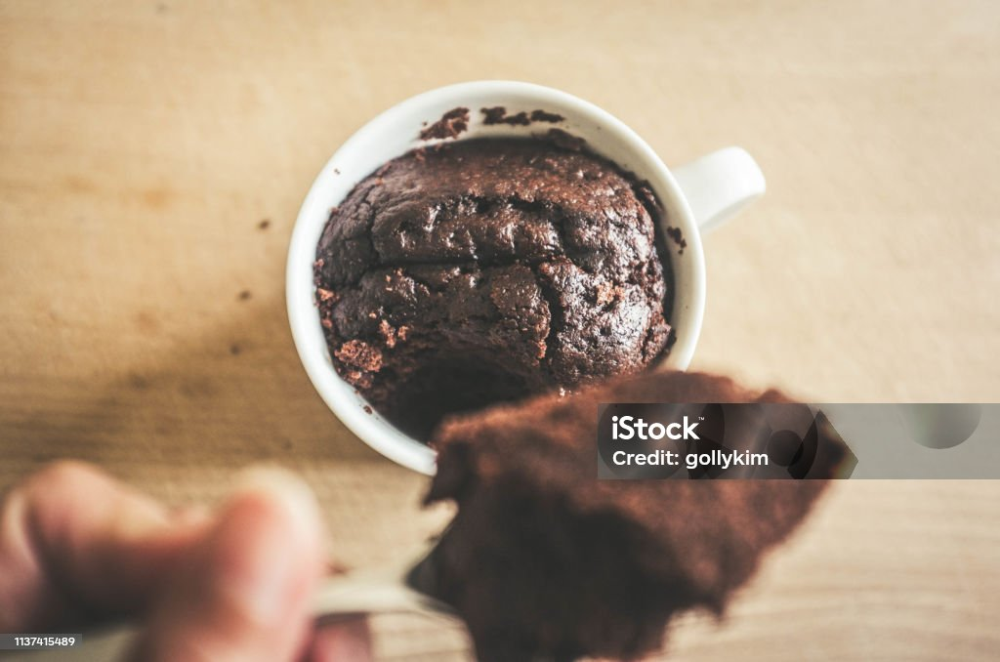

Microwave mug cake
About the Recipe
Need a quick chocolate fix? Try making this easy microwave mug cake with storecupboard ingredients. It's even more delicious with a scoop of vanilla ice cream
Ingredients
- 4 tbsp self-raising flour
- 4 tbsp caster sugar
- 2 tbsp cocoa powder
- 1 medium egg
- 3 tbsp milk
- 3 tbsp vegetable oil or sunflower oil
- a few drops of vanilla essence or other essence (orange or peppermint work well)
- 2 tbsp chocolate chips , nuts, or raisins etc (optional)

Flour

Sugar

Cocoa Powder

Eggs

Milk

Olive Oil

Vanila

Choco Chips

Nuts
Preparation
-
Step 1
-
Add 4 tbsp self-raising flour, 4 tbsp caster sugar and 2 tbsp
cocoa powder to
the largest mug you have (to stop it overflowing in the microwave) and mix.
-
Add 4 tbsp self-raising flour, 4 tbsp caster sugar and 2 tbsp
cocoa powder to
-
Step 2
- Add 1 medium egg and mix in as much as you can, but don't worry if there's still dry mix left.
-
Step 3
-
Add the 3 tbsp milk, 3 tbsp vegetable or sunflower oil and a few
drops of vanilla essence and mix until smooth,
before adding 2 tbsp chocolate chips, nuts, or raisins, if using, and mix again.
-
Add the 3 tbsp milk, 3 tbsp vegetable or sunflower oil and a few
drops of vanilla essence and mix until smooth,
-
Step 4
-
Centre your mug in the middle of the microwave oven and cook on
High for 1½ -2 mins,
or until it has stopped rising and is firm to the touch.
-
Centre your mug in the middle of the microwave oven and cook on
High for 1½ -2 mins,
